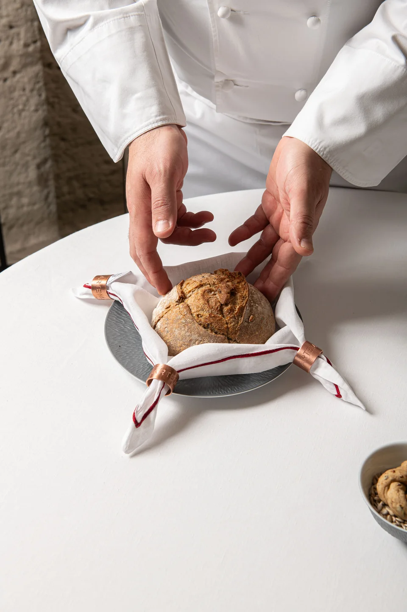

La Favorita
Un hotel nel centro di Sorrento, con un giardino di limoni e maioliche. Sui tetti, la terrazza con piscina.
Hospitality Sorrento
Be Marketing Group

Be Marketing Group · Hospitality
Siamo un’agenzia di comunicazione e marketing per hotel, dimore e ristoranti. Lavoriamo con proprietà e direzione per definire come presentarsi e seguire la comunicazione nel tempo.
Conosci lo studioProgetti selezionati
Una selezione delle strutture di cui seguiamo la comunicazione e il marketing.
Un hotel nel centro di Sorrento, con un giardino di limoni e maioliche. Sui tetti, la terrazza con piscina.
Hospitality Sorrento

Cortili e ambienti scavati nella roccia. A Vetera, il soggiorno si svolge tra le architetture dei Sassi di Matera.
Hospitality Matera

Una villa affacciata sul Golfo, dove i saloni affrescati si aprono verso il colonnato e il mare di Sorrento.
Hospitality Sorrento

Sulle alture di Sorrento, un hotel con terrazze rivolte al Golfo di Napoli e spazi dedicati alla vita all’aperto.
Hospitality Sorrento

Una dimora storica nel centro di Sorrento. Le camere e le suite guardano il mare, con il Vesuvio sullo sfondo.
Hospitality Sorrento

Il ristorante del Grand Hotel La Favorita, tra i tavoli in giardino e la cucina di Domenico Iavarone.
Ristorazione Sorrento


Be Marketing Group
Ci confrontiamo con chi gestisce la struttura e con chi incontra gli ospiti ogni giorno. Conoscere il loro lavoro ci aiuta a scegliere cosa raccontare e con quale tono.
Da questo confronto nascono le scelte di comunicazione. Le seguiamo nel tempo, tenendo conto delle esigenze dell’hotel e dei cambiamenti della stagione.
Come si svolge la collaborazioneUna dimora storica e un hotel indipendente hanno esigenze diverse. La comunicazione deve rispettarle, dal modo in cui presenta gli ambienti a come racconta l’accoglienza e il rapporto con il territorio.
Le nostre competenze
Una collaborazione può partire da una scelta da chiarire o da una comunicazione da seguire nel tempo. Definiamo il lavoro in base alle esigenze della struttura.

Mettiamo a fuoco a chi si rivolge la struttura e come vuole presentarsi. Da qui definiamo l’immagine e il tono da mantenere nella comunicazione.
Consulenza · Identità visiva · Direzione creativa
Fotografiamo gli ambienti e il lavoro di chi accoglie, dalla cucina al servizio in sala. Prepariamo anche video, testi e materiali grafici per le diverse occasioni di comunicazione.
Fotografia · Video · Graphic design · Copywriting
Seguiamo i social e le campagne, lavorando su un calendario condiviso. Le comunicazioni agli ospiti e l’analisi dei dati aiutano a capire cosa proseguire e cosa rivedere.
Social media · Advertising · Email marketing
Progettiamo siti in cui sia facile conoscere la struttura e trovare ciò che serve per contattarla o prenotare. Curiamo i contenuti e il modo in cui si consultano, anche da telefono.
Siti web · Esperienza digitale · SEO


Domenico Iavarone e Nino Di Costanzo cucinano insieme da Zest, con un menu dedicato agli ingredienti campani.

Eduardo Estatico ospita Remo Capitaneo, chef di Verso a Milano, per una cena a quattro mani.
Il metodo
Decidiamo insieme le priorità e il lavoro da seguire. Il confronto con proprietà e direzione continua anche dopo le prime scelte.
Ci racconti come lavora l’hotel e a chi si rivolge. Esaminiamo la comunicazione attuale e individuiamo gli aspetti su cui intervenire.
Stabiliamo gli obiettivi della collaborazione e le attività da seguire. Concordiamo tempi e modalità di lavoro con chi gestisce la struttura.
Ci occupiamo della comunicazione concordata e ne discutiamo insieme l’andamento. Quando cambiano le esigenze dell’hotel, rivediamo le priorità.


Contatti
Scrivi a BMGScrivici quale struttura segui e su cosa vorresti lavorare. Ci aiuterà a preparare un primo confronto.
info@bemarketinggroup.itPer proprietà e direzione
di hotel, dimore e ristoranti.